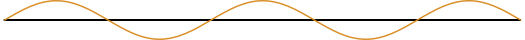
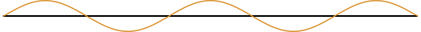

2 La luz
2.1 Introducción
En términos sucintos, la luz es un tipo de energía denominada radiación electromagnética, que a su vez es un campo electromagnético variable (Figura 2.1); es decir, una combinación de campos eléctricos y magnéticos oscilantes que transportan energía.

Figura 2.1: Onda electromagnética. El campo magnético (\(M\)) sobre el plano horizontal y el campo eléctrico (\(E\)) sobre el vertical. Estos campos siempre están en fase a 90° uno respecto del otro.
La radiación electromagnética comprende la radiación gamma, los rayos x, la luz ultravioleta (UV), la luz visible, la luz infrarroja, las microondas, y las ondas de radio (FM y AM); en ese orden. El rango completo de estas radiaciones se denomina espectro electromagnético.
Este espectro de radiaciones puede graficarse en una banda de colores que van desde el violeta —más energético— al rojo —menos energético—, los cuales comprenden la luz visible (Figura 2.2). Más allá de estos rangos, las radiaciones no son visibles al ojo humano.

Figura 2.2: Espectro de luz visible. A la izquierda se localizan las radiaciones con mayor frecuencia (más energéticas) y a la derecha aquellas con mayor longitud de onda (con menor frecuencia y, por consiguiente, menos energéticas).
En las siguientes secciones se expone el origen de la luz, así como sus propiedades y percepción a través de nuestros sentidos humanos.
2.2 El origen de la luz
2.2.1 El átomo y los niveles de energía
Los átomos están compuestos por un núcleo formado por neutrones y protones, y por una nube de electrones que gira a su alrededor (Figura 2.3). Estos electrones giran en órbitas ordenadas en niveles, unos más alejados de otros. Puesto que el núcleo ejerce una atracción gravitatoria sobre los electrones, éstos últimos necesitan cada vez más energía según se alejan del núcleo, por lo que se entiende que los niveles más alejados son más energéticos.
Figura 2.3: Átomo con tres niveles de energía (órbitas): dos electrones en su primer nivel, ocho en el segundo (de acuerdo al principio de Aufbau) y dos en el tercero. La existencia de doce electrones revela que este esquema es el de un átomo de magnesio.
2.2.2 La emisión de energía
Cuando un electrón gana energía, se energiza, se excita. El electrón entonces se mueve a un estado de energía más alto dentro del propio átomo; es decir, pasa de una órbita a otra más externa, más alejada del núcleo (Figura 2.4). El electrón gasta energía en ese salto y en su movimiento en contra de la gravedad del átomo. Cuando la energía se agota, el electrón se relaja y regresa a su estado basal original. Es justamente en ese retorno cuando ocurre una emisión de energía en forma de radiación electromagnética (Figura 2.5); en forma de fotón. El fotón es la unidad de la luz. El fotón es la luz.

Figura 2.4: Niveles de energía. Posterior a la absorción de energía, un electrón puede saltar de su estado basal a un estado excitado de energía. Entre más energía, mayor será el salto.

Figura 2.5: Un electrón (en naranja) retorna a su estado basal original desde un estado de energía más elevado (en este ejemplo, del tercer nivel al segundo). En el salto de vuelta a su órbita, el electrón libera energía en forma de fotón. Recuerde: el fotón es la luz.
2.2.3 El fotón, la onda y la longitud de onda
El fotón es una partícula sin masa y cuyo comportamiento puede corresponderse con el de una onda o el de una partícula, según las circunstancias. Los fotones se pueden mover solos o en grupo, y cuando lo hacen de esta última manera forman una onda.
Imagínese a estas ondas como una línea que avanza hacia una dirección dada y —conforme lo hace— sube y baja dibujando crestas, curvas y suaves. A la distancia que hay entre dos crestas contiguas se le conoce como longitud de onda (\(\lambda\)) (Figura 2.6), la cual se mide en nanómetros (nm). ¿Cuánto es un nanómetro? Es un concepto difícil de imaginar: tome un metro y divídalo en mil millones de partes iguales. Cada una de esas partes es un nanómetro.

Figura 2.6: Longitud de onda (\(\lambda\)) y amplitud (\(A\)). La primera es la distancia entre dos crestas, una al lado de la otra; mientras que la segunda es la distancia entre el punto de equilibrio y el punto más alto de la cresta.
2.2.4 La frecuencia
Otro término importante aquí es la frecuencia, la cual se mide en hercios (Hz) —epónimo de Heinrich Rudolf Hertz—y es la medida del número de veces que un fenómeno se repite en un segundo.
Es decir, la frecuencia es el número de ondas que pasan por un punto dado en un segundo. 1 Hz es una onda.
Por ejemplo, si en un punto dado pasan mil ondas en un segundo, entonces esta radiación tiene una frecuencia de 1 000 Hz, o —lo que es lo mismo— 1 MHz (un mega hercio).
La frecuencia es importante porque determina qué tan energética es una radiación electromagnética dada. A mayor frecuencia mayor energía, y viceversa (Figura 2.7).
 

Figura 2.7: Comparación entre radiaciones de alta energía (arriba) y baja energía (abajo).
En la figura anterior puede apreciarse que —además de mayor frecuencia— las radiaciones de alta energía poseen más amplitud y menor longitud de onda; mientras que, por el contrario, las de baja energía tienen menor frecuencia y menos aplitud, pero mayor longitud de onda. Por lo tanto, se concluye que la frecuencia tiene una relación inversa con la longitud de onda.
2.3 Propiedades de la luz
2.3.1 Absorción
La absorción es el fenómeno en el cual las longitudes de onda de un haz luz son absorbidas, total o parcialmente, por el medio en el que inciden.
A pesar de la concepción común, los electrones no giran en órbitas perfectamente circulares o elípticas alrededor del núcleo, sino que vibran mientras lo hacen. Y la intensidad —la frecuencia— de esa vibración depende de la cantidad de energía contenida en el electrón en cuestión. Si leímos con atención la sección El átomo y los niveles de energía podemos inducir que los electrones que están en las órbitas más externas del núcleo —las más energéticas— vibran con mayor intensidad que aquellos que están en los niveles u órbitas más internas.
En la absorción, la frecuencia de la luz es igual o muy próxima a la de los electrones del medio en que incide. Entonces, para que haya absorción, es indispensable que ambas frecuencias sean iguales o semejantes.
La energía que se absorbe incrementa la vibración de los electrones mediante resonancia. Luego, estos electrones interacúan con otros electrones vecinos, propagando de esta manera la energía vibratoria a través del medio, produciendo así calor (recordemos que el calor es el producto de la cinética de los átomos).
Dado que existen distintos tipos de átomos y éstos tienen diferentes frecuencias de vibración según su composición, los objetos absorben luz de forma discriminatoria; es decir, la absorción es selectiva. Esta selectividad hace que algunos objetos se aprecien negros, oscuros u opacos, pues retienen total o parcialmente las longitudes de onda les inciden, impidiendo su reflexión y/o transmitancia (Figura 2.8). Asímismo, es importante hacer notar que las sustancias pueden ser oscuras u opacas a ciertas longitudes de onda, pero resultar transparentes a otras. Por ejemplo, el agua es opaca a la radiación ultravioleta (UV), pero es transparente a la luz visible.
El fenómeno de la absorción está directamente relacionado con el del color, el cual se aborda más adelante.

Figura 2.8: Absorción de un haz de luz. En este ejemplo, el medio absorbe por completo las longitudes de onda de la luz inciente, por lo que el medio se aprecia negro.
2.3.2 Reflexión
La reflexión es el fenómeno en el cual un haz de luz «rebota» cuando incide sobre un medio.
Ahora bien, la simple definición anterior tiene algunos detalles.
Cuando los fotones de las ondas de un haz de luz inciden sobre un medio, excitan a los electrones de dicho medio y luego éstos liberan energía en forma de fotones (véase La emisión de energía).
De lo anterior se deduce algo muy importante. Y es que los fotones que inciden sobre el medio no son los mismos que luego son emitidos, sino que se trata de otros diferentes. Por lo tanto, el decir que la reflexión es el «rebote» de la luz es sólo una forma simple de explicar el fenómeno, pero no es lo que en verdad ocurre. No se confunda: los fotones no rebotan porque no tienen masa. Así de simple.
Ahora bien, si los átomos del medio están muy bien ordenados, dando una estructura uniforme —como en un espejo—, los fotones que son emitidos salen del medio en el mismo ángulo en que lo hicieron los fotones de la luz incidente. A esto se le llama reflexión especular (Figura 2.9). Esta reflexión expecular es la que da origen a la imagen especular, que es lo que coloquialmente conocemos como reflejo.

Figura 2.9: Reflexión especular de un haz de luz. El ángulo de incidencia (\(\Theta_{1}\)) es igual que al ángulo de reflexión (\(\Theta_{2}\)).
Si, por el contrario, los átomos del medio tienen cierto nivel de entropía en su orden —dando como resultado un medio con una estructura irregular, como en una roca— los fotones emitidos salen del medio en un ángulo distinto al de los fotones incidentes, por lo que no generan ninguna imagen especular. Este tipo de reflexión recibe el nombre de reflexión difusa.
Todos los objetos y sustancias visibles presentan reflexión. Y el tipo de reflexión que tengan depende del orden estructural de sus átomos.
2.3.3 Refracción
La refracción es la desviación de las ondas electromagnética en su viaje cuando ingresan a un medio que perturba su dirección y velocidad.
En el vacio, la luz se desplaza a la sorprendente velocidad de 299 792 458 m * s -1. Esto es, aproximadamente 300 000 Km en un segundo.
En términos muy simples, cuando las ondas de luz pasan de un medio a otro —como del aire al agua, o del aire a un lente, por ejemplo—, los fotones se encuentran con otras partículas que obstaculizan su camino, resultando en una desaceleración. Esta desaceleración es la responsable de la modificación de la dirección de los fotones, lo que produce el fenómeno de la refracción (Figura 2.10).

Figura 2.10: Refracción de un haz de luz que pasa de un medio a otro.
La refracción o índice de refracción depende de la velocidad de la luz en el medio en que ingresa, por lo que matemáticamente puede obtenerse mediante la fórmula:
\[\begin{equation} n = \frac{c}{v} \end{equation}\]
Donde \(n\) es el índice de refracción, \(c\) la velocidad de la luz en el vacío, y \(v\) la velocidad de la luz en el medio en el que se desea calcular la refracción. Como puede intuirse, el índice de fracción es un valor adimensional (no tiene unidades).
El ángulo de incidencia puede relacionarse con el ángulo de refracción mediante la ley de Snell:
\[\begin{equation} n_{1} * sin (\Theta_{1}) = n_{2} * sin (\Theta_{2}) \end{equation}\]
Como se verá en capítulos posteriores, el índice de refracción es una variable importante para el cálculo de la apertura numérica, el cual es una medida del poder de resolución y captación de luz de un objetivo.
2.4 Puntos clave
- La unidad de la luz es el
fotón. - El fotón no tiene masa.
- El fotón puede comportarse como una onda o una partícula, según las circunstancias.
- Los fotones pueden moverse solos o en grupo.
- Cuando los fotones se mueven en grupo forman una
onda. - La luz se mide en términos de
longitud de onda. - La longitud de onda es la distancia entre dos crestas contiguas de ondas.
- El símbolo para la longitud de onda es la letra griega lamda (\(\lambda\)).
- La longitud de onda se mide en
nanómetros. - Un nanómetro es un metro dividido en mil millones (1 000 000 000) de partes iguales.
- El símbolo del nanómetro es
nm. - La
frecuenciaes la cantidad de ondas que pasan por un determinado punto en un segundo. - La frecuencia se mide en
hercios. - El símbolo de los hercios es
Hz. - Si la longitud de onda es larga, tiene baja amplitud y baja frecuencia, resultando en baja energía.
- Si por el contrario la longitud de onda es corta, entonces es de alta amplitud y alta frecuencia, lo que significa alta energía.
- La luz es un tipo de
radiación electromagnética. - El conjunto de radiaciones electromagnéticas recibe el nombre de
espectro electromagnético. - La
luz visiblees solo una parte el espectro electromagnético. - El
colores el resultado de la longitud de onda. - La
luz blancaes el resultado de la combinación de todos los colores.